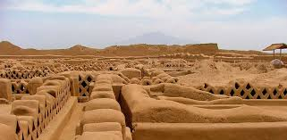
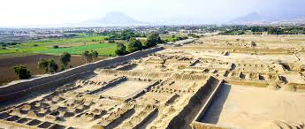
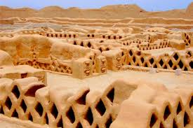
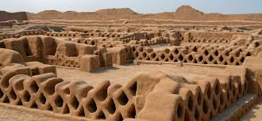

📍 1. Historia y Ubicación

- Ubicación: Trujillo, Región La Libertad, Perú.
- Capital del reino Chimú, fundada alrededor del año 850 d.C.
- Reconocida como la ciudad de adobe más grande de América.
🏯 2. Arquitectura y Diseño

- Extensión aproximada de 20 km².
- Construida enteramente en adobe con relieves decorativos.
- Compuesta por palacios, plazas, murallas y corredores laberínticos.
🌄 3. Significado Cultural

- Centro político, económico y administrativo de los Chimú.
- Decoraciones que representan peces, aves y olas del mar.
- Reflejo de la importancia del mar en la cosmovisión Chimú.
🌍 4. Importancia Turística

- Declarada Patrimonio Cultural de la Humanidad por la UNESCO en 1986.
- Principal atractivo arqueológico del norte del Perú.
- Visitas guiadas, museos de sitio y circuitos turísticos en Trujillo.